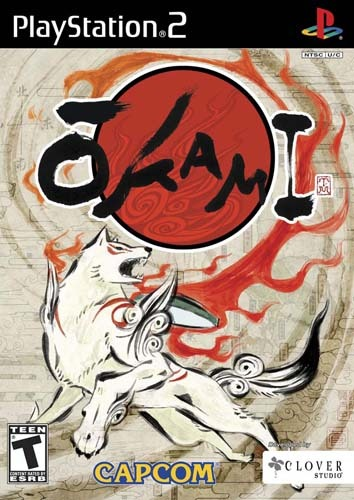

Sinopse
Okami é um jogo de ação-aventura que segue a deusa do sol, Amaterasu, enquanto ela tenta restaurar a terra do Japão, que foi mergulhada na escuridão pelo demônio Orochi. O jogo apresenta uma estética única inspirada na arte tradicional japonesa, com gráficos em cel-shading e uma jogabilidade baseada em combates e resolução de enigmas.
Amaterasu assume a forma de um lobo branco e, com a ajuda de seu pincel celestial, ela pode realizar poderosos ataques e resolver enigmas, trazendo a natureza de volta à vida e enfrentando diversas ameaças que surgem ao longo de sua jornada. O jogo é amplamente aclamado por sua jogabilidade criativa, visual único e narrativa envolvente.
Características Principais
- Estilo visual inspirado na arte tradicional japonesa, com gráficos em cel-shading
- Uso de um pincel celestial para resolver enigmas e realizar poderosos ataques
- Ambientação rica e detalhada, com cenários baseados na mitologia japonesa
- Sistema de combate dinâmico e criativo, com habilidades únicas do protagonista
- Jogo premiado por sua narrativa envolvente e personagens memoráveis
- Exploração de mundo aberto e resolução de puzzles para restaurar a natureza
Imagens Adicionais